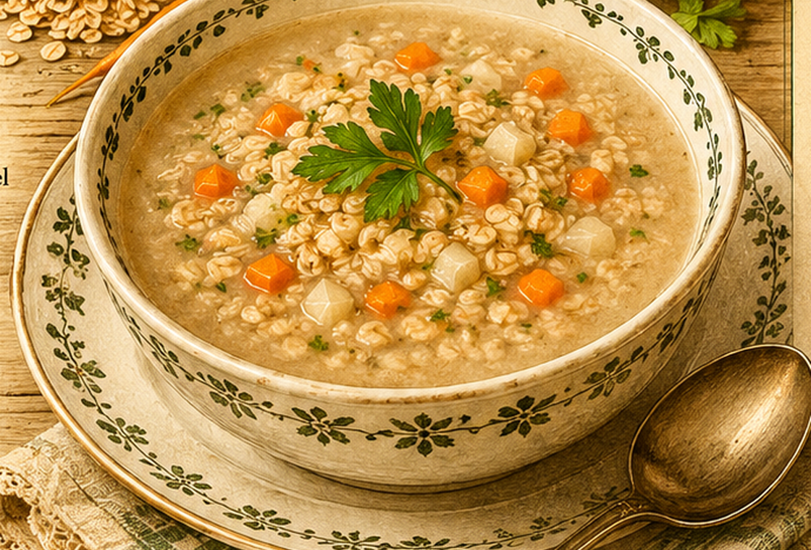

Haferflockensuppe
Eine einfache, sättigende Suppe aus Haferflocken, Suppengemüse und Liebstöckel.

Originale Überlieferung
100 g Haferflocken werden mit zwei Litern kaltem Wasser aufgesetzt. Fett, Salz und Suppengemüse kommen hinzu. Nach einer halben Stunde Kochzeit wird die Suppe nach Geschmack mit Liebstöckel vollendet.
Moderne Übertragung
Haferflocken werden in kaltem Wasser angesetzt und mit klein geschnittenem Gemüse langsam gekocht, bis die Suppe leicht gebunden ist.
Zutaten
- 100 g Haferflocken
- 2 l kaltes Wasser
- 1 kleine Zwiebel
- 1 EL Fett oder Butter
- 1 EL Salz, später nach Geschmack
- etwas Suppengemüse
- nach Geschmack Liebstöckel
Zubereitung
- Haferflocken und kaltes Wasser in einen Topf geben.
- Zwiebel und Suppengemüse klein schneiden und mit Fett und Salz zugeben.
- Alles aufkochen und etwa 30 Minuten sanft köcheln lassen.
- Mit Liebstöckel und gegebenenfalls weiterem Salz abschmecken.